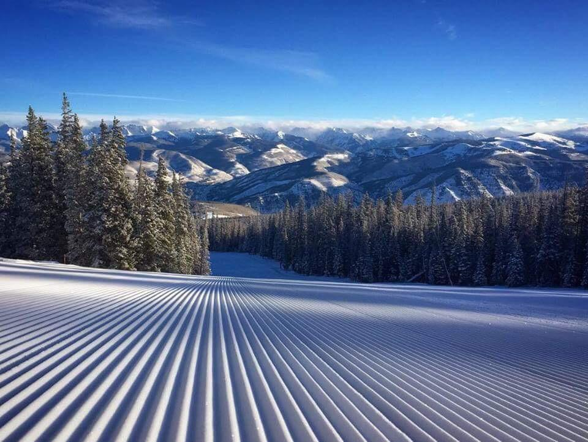
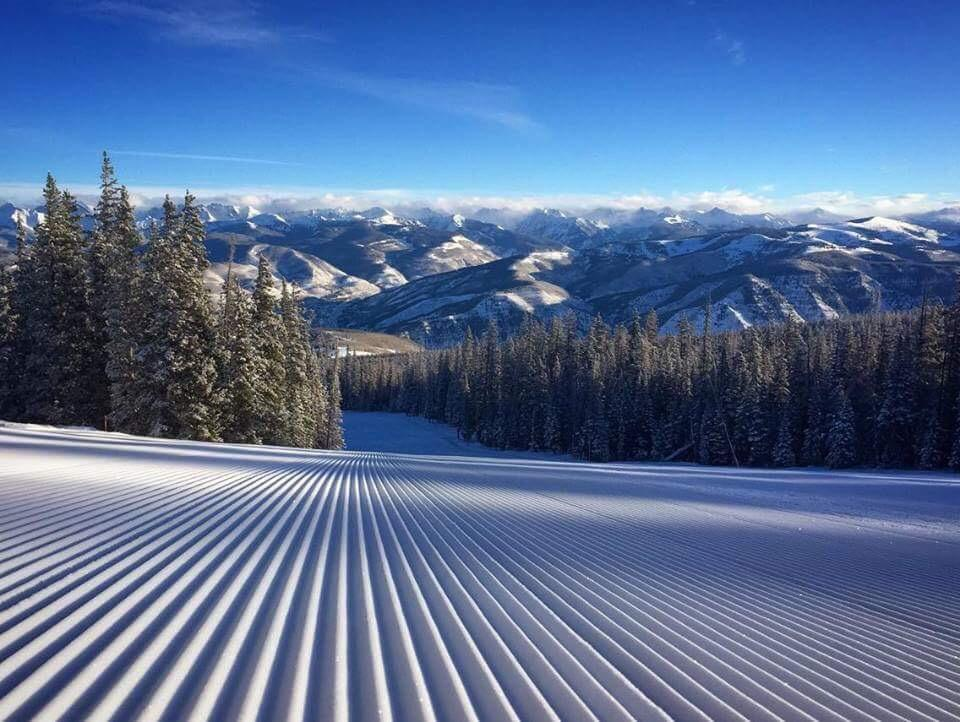
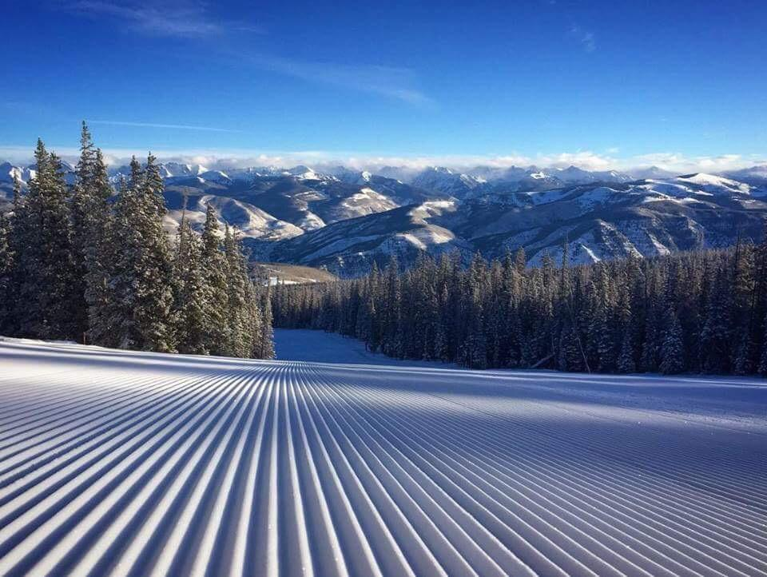

All mountain snowboarding is one of the most common types of snowboarding. All mountain describes riding the general terrain of a resort. All mountain can vary dratically in difficulty and terrain. One may find they enjoy riding groomed trails, moguls/bumps, gladed trails, or back bowls. Various different snowboards can be used for all mountain. However, all mountain boards are generally stiffer can are more likely to be directional.
